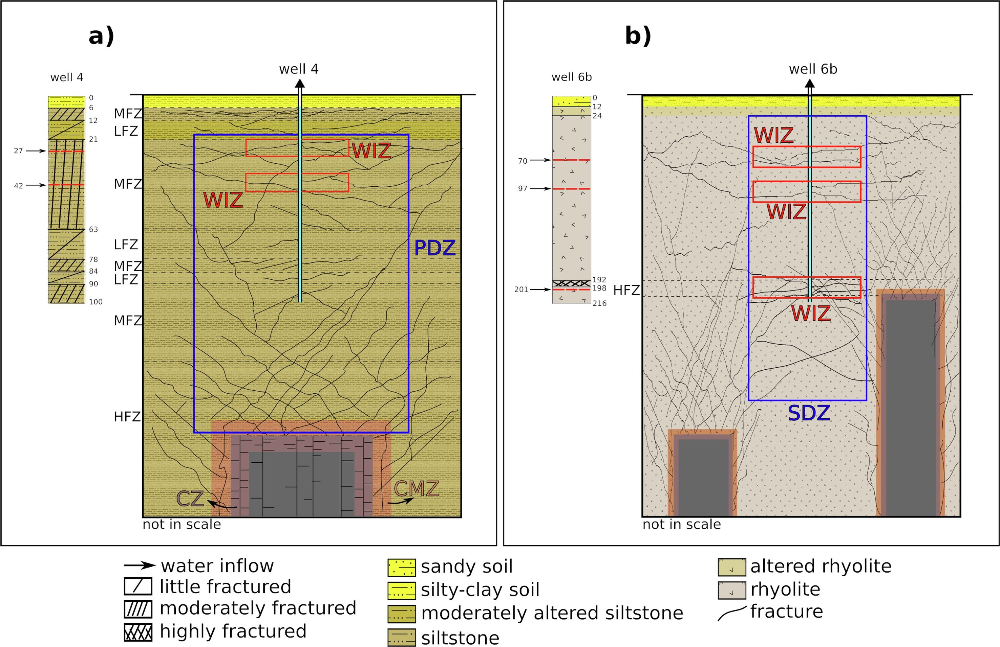

Well productivity in the Ponta Grossa dike Swarm, Brazil: An Integrated study with magnetic data inversion and clustering analysis of models solutions

Resumo em Português
Enxames de diques são megaestruturas observadas em diferentes contextos geológicos que podem afetar os sistemas de fluxo de águas subterrâneas. Essas estruturas são bem reconhecíveis por meio de magnetometria aérea; no entanto, é difícil obter informações quantitativas sobre a distribuição e as propriedades médias dos diques que geram as anomalias magnéticas observadas. Este trabalho apresenta um procedimento para realizar a inversão de dados magnéticos ao longo de perfis que transectam o Enxame de Diques Ponta Grossa (EDPG) e determinar suas propriedades médias com a aplicação de análise de clusters às soluções obtidas. Em seguida, as soluções médias do modelo são correlacionadas com um banco de dados regional de produtividade de poços, sugerindo que os poços mais produtivos são encontrados próximos a um grupo de diques rasos do EDPG no sudeste do Brasil. Para a área composta principalmente por rochas sedimentares, os poços situados sobre diques rasos mostram valores de capacidade específica 14,5 vezes maiores do que aqueles não próximos a um dique no mesmo domínio. Para a área composta principalmente por rochas graníticas, a produtividade dos poços sobre diques ainda é maior, um fator de 4,3 acima daqueles sem diques. Um modelo conceitual é apresentado para explicar a maior produtividade dos poços próximos aos diques, resultante do fraturamento da rocha hospedeira causado pelo posicionamento dos diques. Apenas um grupo de diques rasos parece estar associado a poços mais produtivos.